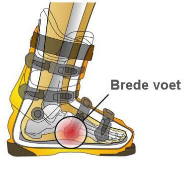

De oplossing voor brede voeten in een skischoen.
Waarschijnlijk de meest voorkomende klacht bij skiërs: brede voeten in te smalle skischoenen.
Nederlanders hebben vrij lange en dus ook brede voeten. Te smalle skischoenen kunnen tal van klachten veroorzaken: kramp, branderige voorvoeten, koude tenen etc etc. In ons ruim tienjarig bestaan zien we dit als één van de meest voorkomende klachten.
Brede, standaard skischoenen voor de brede voet.
Weliswaar maken steeds meer producenten ook bredere modellen en deze worden verkocht als skischoenen voor de brede voet. Maar vaak is dat toch niet breed genoeg. Het verschil tussen een standaard skischoen en een bredere variant is meestal marginaal. Het gaat dan om enkele millimeters. Voor veel skiërs misschien net genoeg maar voor velen nog steeds te smal. Lees meer hierover in onze blog over skischoenen voor brede voeten.
Brede voeten: uw eigen skischoen laten aanpassen.
Tijdens het eerste gratis consult dat elke klant bij ons krijgt meten wij de breedte van uw voeten op en vergelijken de uitkomst met de breedte van uw skischoen. Vaak is met een relatief eenvoudige ingreep uw skischoen breder te maken.
Dit gebeurt op onze Ultracam: een speciale machine die uw skischoen verwarmt en iets 'oprekt'. De schoen mag ook weer niet te breed worden omdat u dan grip verliest en verkrampt gaat skiën. Ook zult u 'zoekende' ski's krijgen.
Dé valkuil voor skiërs met brede voeten: te grote skischoenen..
Het klinkt tegenstrijdig maar veel mensen met brede voeten kopen te grote skischoenen. Als ze in de winkel een schoen passen die precies bij hun voetlengte hoort zal die in de breedte in veel gevallen te krap aanvoelen. Schandalig maar waar: vaak adviseren de verkopers dan om maar één maat groter te nemen. Of zelfs meerdere maten. Die zijn immers ook breder, is dan de logica. Op zich klopt dat, maar als ze dan in de breedte goed zitten, hebben ze een schoen gekocht die veel te lang is..
En dat geeft weer hele andere problemen: de voet komt los in de hielkuip waardoor er onevenredig veel druk op de bal van de voet terecht komt. Om dát te voorkomen worden de bovenste schnallen strakker gezet waardoor de kuitspieren weer worden afgekneld. Kortom: het ene probleem wordt ingeruild voor het andere.
Skischoenen op maat of op maat gemaakte skischoenen.
Voor skiërs met brede voeten die een nieuwe skischoen zoeken, zal een thermoplastische skischoen vaak een oplossing zijn. Deze skischoenen worden verhit en tijdens het fitting-proces verbreid. In extremere gevallen zal een volledig op maat gemaakte schoen een oplossing bieden.S
